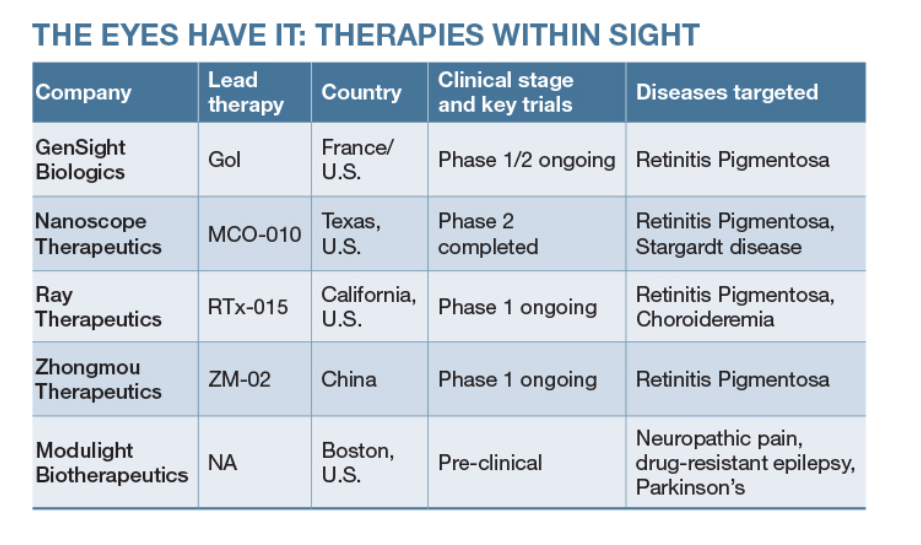

Recognition
Awards & Honors
Media & Press
2025
Award
Termeer Scholars Award, Termeer InstituteRecognizing academic scientists committed to translating research into patient impact. A two-day workshop on values-driven leadership, commercialization, and bench-to-bedside pathways.

Media
IITM Shaastra Magazine — Eyes on the LightHad a wonderful time speaking with Shaastra about my research on optogenetics — the science of using light to control neurons, and how we're engineering light-sensitive proteins for therapeutic applications beyond the brain. The piece covers our work on de-immunizing opsins and the path toward clinical translation in peripheral tissues.
2024
Award
Named on Forbes 30 Under 30, Science List, AsiaAnnual list recognizing young leaders shaping the future of science and technology across the Asia-Pacific region.
Award
McGovern Travel and Technology Award, MITSupporting postdoctoral research in de-immunizing optogenetics for clinical translation.
Media
Nagoya University G30 — Alumni ProfileFeatured profile tracing the path from the G30 Chemistry Program to postdoctoral research at MIT.
Media
Schmidt Science Fellows — Video FeatureOn pivoting from materials science into neuroscience, and building at the intersection of immunology, optogenetics, and AI.
2022
Media
Schmidt Science Fellows — Fellow ProfileFrom materials science to neurobiology — pivoting disciplines as a Schmidt Science Fellow at MIT.
2021
Award
Schmidt Science Fellow, Rhodes Trust, UK (2021–2024)Highly competitive postdoctoral fellowship supporting scientists who pivot into a new field. Funded the transition from nanomaterials to neuroscience at MIT.
Media
Linacre College, Oxford — Alumna Named Schmidt Science FellowCollege announcement on selection for the 2021 Schmidt Science Fellows cohort.
2020
Award
Best Poster Award, MRS Spring, BostonFor work on liquid-exfoliated 2D lead iodide nanodisks imaged via ADF-STEM.
2018
Award
EPSRC Student Scholarship, Dept. of Materials, University of Oxford (2018–2020)Doctoral funding from the Engineering and Physical Sciences Research Council.
Award
Best Poster Award at Graphene 2018Largest European conference on graphene and 2D materials. For atomic-resolution imaging of metallofullerenes on graphene.
Award
Travel Grant & Scholarship, ICTP, Trieste, ItalySummer School on Collective Behaviour in Quantum Matter.
Award
Founders Graduate Travel Scholarship, Dept. of Materials, University of Oxford
2017
Award
Women in Science Fellowship, Linacre College, University of Oxford (2017–2020)Supporting women pursuing doctoral research in the sciences at Oxford.
2016
Award
Graduated Top of the Class, Nagoya University, Japan
2014
Award
Outstanding Presenter at Global 30 Wrap-up Symposium, JSPS, Fukuoka, Japan
2012
Award
Global 30 Undergraduate Studentship, Nagoya University (2012–2016)
Award
JASSO Scholarship, Ministry of Education, Japan (2012–2013)